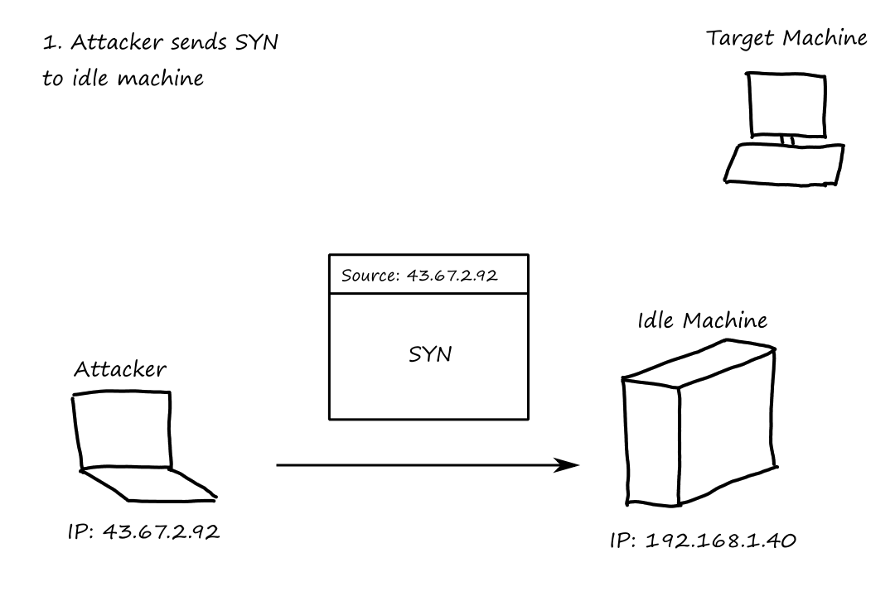
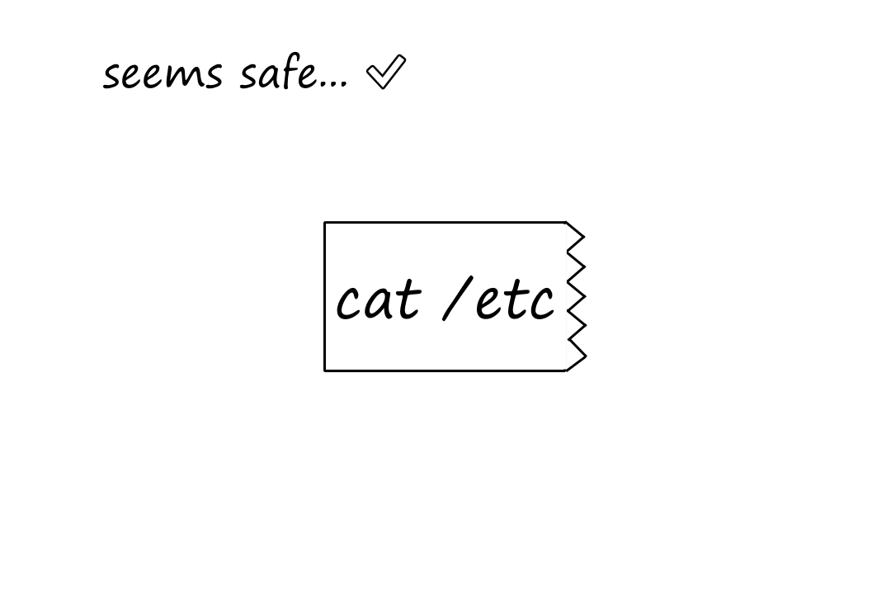
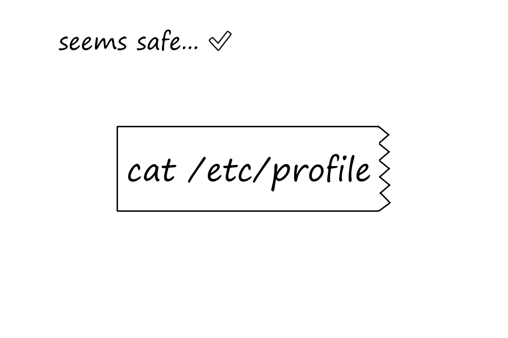

Shortcut to this page: ntrllog.netlify.app/security
Info provided by Counter Hack Reloaded (published in 2005) and Certified Ethical Hacker v9 Study Guide (published in 2016)
This is an extension of the computer networking resource. Well, we’ll see where this goes — I’m writing this as the class goes.
Firewalls decide what kind of traffic is allowed into and out of a network.
Hardware-wise, a firewall isn't anything special; just another computer.
The more general term for what a firewall does is "packet filtering". A firewall is a type of packet-filtering device. (A router can also be configured to be a packet-filtering device.)
Traditional packet filters look at the headers of a packet to see what type of packet it is, where it came from, and where it's going. Specifically,
These fields are used to create packet-filtering rules, which are often called Access Control Lists (ACLs).
| Action | Source Address | Destination Address | Protocol | Source Port | Destination Port | Control Bit |
|---|---|---|---|---|---|---|
| Allow | Inside Network Address | Outside Network Address | TCP | Any | 80 | Any |
| Allow | Outside Network Address | Inside Network Address | TCP | 80 | > 1023 | ACK |
| Deny | All | All | All | All | All | All |
If a packet matches multiple rules, the simplest policy a firewall can adopt is to apply the first rule from the top that matches.
The problem with traditional packet filters is that they only look at the packet headers, which provides a very limited view of what the traffic is actually doing.
For example, the second rule above allows all TCP traffic to come in as long as the ACK bit is set. Yes, it's expected that outside traffic coming in will have the ACK bit set. But only as responses. What if there are "responses" coming in to our network, but no devices in our network ever made any requests?
This is where stateful packet filters come in. They maintain a dynamic state table that keeps track of connections that are made. This allows them to "remember" earlier packets that went through/out and make decisions about later packets.
| Source Address | Destination Address | Source Port | Destination Port | Timeout (Seconds) |
|---|---|---|---|---|
| 10.1.1.20 | 10.34.12.11 | 2341 | 80 | 60 |
| 10.1.1.34 | 10.22.11.45 | 32141 | 80 | 40 |
Notice that with this table, if we see outside traffic coming in with the ACK bit set going to one of these two devices, then we know it's an actual response.
Instead of looking at individual packets, proxy-based firewalls look at the contents of the packets. In more OSI terms, proxies focus on the application level.
(The Firewalk section later mentions this very briefly.)
Proxies extract the application data from the packets and rebuild the data into the complete application message. If it looks good, the proxy creates new packets with new headers (containing the same data) and sends them to their destination.
In a sense, they pretend to be the application for a second and see what the application would be receiving.
Traditional packet filters are fast, but their intelligence is very limited.
Stateful packet filters are smarter, but slower.
Proxy-based firewalls are the smartest, but they need the most memory and processing power.
It can be a good idea to use a combination of these three in a network. For example, a stateful packet filter can sit between the Internet and the DMZ while a proxy-based firewall can sit between the packet filter and the internal network.
The DMZ (Demilitarized Zone) is a part of the network that sits outside of the internal network. The purpose of it is to separate the machines that need to be exposed to the Internet from those that don't, where the machines that need to be exposed to the Internet are put in the DMZ. These machines are things like Web servers or DNS servers.
The DMZ also acts as a buffer so that if an attacker gets access to a machine in the DMZ, they don't immediately have access to the machines in the internal network.
Scanning is a process attackers use to find an opening into the network they are trying to attack.
Imagine you're looking for free Wi-Fi, so you drive around looking for networks without that lock symbol. This is kinda what war driving is. In more technical terms, war driving is the process of looking for accessible and unsecured WLANs.
A network might have one or more wireless access points that allow devices to connect to that network wirelessly. Attackers target these access points to try to gain entry into a network.
From my understanding, an access point can loosely be thought of as a Wi-Fi range extender. The difference is that access points broadcast wired signals straight from the network while range extenders rebroadcast wireless signals.
(I'm going to use CSULA as an example with absolutely no knowledge about how the network is actually set up. This is all for the sake of example.)
Let's say you connect to CSULA's network by connecting to the Wi-Fi network called "CSULA-SECURE". An access point is what allows you to see "CSULA-SECURE" no matter where you are on campus. Alternatively, an access point can be configured to allow devices to connect to CSULA's network but under a different Wi-Fi network, say "CSULA-EMPLOYEES". In the latter situation, a new WLAN is created.
While the password/authentication required to connect to "CSULA-SECURE" may be strong, if the password/authentication required to connect to "CSULA-EMPLOYEES" is weak, then attackers can enter the network through this unsecured WLAN.
In that little CSULA example, the Wi-Fi names are referred to as ESSIDs (Extended Service Set Identifiers). They're usually publicly visible so that you can find and connect to them. But some ESSIDs can be hidden. While an ESSID may be hidden, that doesn't mean it's necessarily hard to obtain it.
The goal of war driving, from an attacker's perspective, is to find as many of these ESSIDs as possible to increase the chances of finding an unsecured network.
The attacker may already have a specific target in mind, or they may just be looking for any vulnerable targets in the area.
In the 802.11 (a.k.a. Wi-Fi) protocol, a device can send a probe request message to an access point. A probe request is supposed to include the ESSID so that only the access point(s) with that specified ESSID responds. But access points can be (and often are by default) configured to respond to probe requests that specify "Any" as the ESSID. And under the 802.11 protocol, the response must include the ESSID. So an attacker can just send out a bunch of probe requests with ESSID="Any" to all access points in the area and gather their responses, generating a nice list of ESSIDs.
NetStumbler, which is one of the most popular scanning tools, does this probe request stuff. NetStumbler goes even further by collecting a whole slew of information, including encryption method. An attacker using NetStumbler can easily identify networks that are using weak encryption.
So what happens if an access point is configured to ignore probe requests with ESSID="Any"? Well, under the 802.11 protocol, access points periodically send out beacon packets to synchronize their clocks with the devices that are connected. These beacons usually include the ESSID, so an attacker can also capture these beacon packets.
This can be done by (loosely speaking) putting the device into rfmon mode, a.k.a. monitor mode, which allows the device to collect all wireless traffic, not just the traffic directed to that device.
So what happens if an access point is configured to omit ESSIDs from beacons? Well, any wireless traffic between an access point and all devices connected to it will have the ESSID information, so an attacker can just use rfmon mode to collect wireless traffic and get the ESSID from there.
Wellenreiter is a tool that does this rfmon mode stuff. Futhermore, Wellenreiter also listens for ARP and DHCP traffic to determine MAC and IP addresses.
Okay, so the ultimate scenario: what if
Well, the attacker can use a tool called ESSID-Jack to force traffic. Before using the tool, the attacker needs to obtain the MAC address of the access point, which can be done by using Wellenreiter to sniff for management/beacon frames, which will have the MAC address.
Once the attacker has the MAC address of the access point, they can pretend to be that access point and send a deauthenticate message to the broadcast address, disconnecting all devices connected to that access point. As the devices try to reconnect, they will generate traffic for the attacker to collect.
Let's say the attacker found an access point advertising an unsecured WLAN and was able to connect to the network. The next thing an attacker would want to do is to discover other devices connected to the network and build a map of the network.
One simple way to do this is to ping all possible addresses and see which addresses respond. They send an ICMP Echo Request packet and look for an ICMP Echo Response message. If there is no response, it could mean the address is not being used or the ping/response is being filtered.
Many networks block ping messages, so an attacker could send a TCP or UDP packet instead.
After discovering which hosts are alive, attackers would want to know how they are connected to each other (the network structure/topology).
They can use traceroute to see how many routers there are from the attacker to any destination.
Tracerouting uses the TTL field in the IP header. The TTL is decremented by the maximum of
Packets are usually sent in less than a second, so the TTL is usually decremented by 1.
If a router decrements the TTL to 0, it will send an ICMP Time Exceeded message, where the source address of the message is the IP address of that router. So if an attacker starts a traceroute with a TTL of 1, it will learn the IP address of the first router. If the attacker starts a traceroute with a TTL of 2, it will also learn the IP address of the second router. And so on.
Cheops-ng is network-mapping tool that uses pings and traceroute.
Pretty much, use firewalls and router packet filtering.
After knowing the addresses of live systems and gaining a basic understanding of the network topology, an attacker would want to find potential entryways into the systems by finding open ports. In doing this, the attacker can also learn which services are in use. For example, if port 80 is open, then most likely a Web server is running on that machine.
A port scanner sends packets to various ports to determine if any service is listening there.
Nmap is the most popular port-scanning tool.
TCP Connect scans attempt to complete the three-way handshake with each port. So they send a SYN, wait for the SYN-ACK, and then send an ACK along with FIN to tear down the TCP connection.
If a port is closed, the target machine doesn't send the SYN-ACK. Depending on the machine and the network configurations, it could return nothing, a RESET packet, or an ICMP Port Unreachable packet.
Connect scans are really easy to detect because completed TCP connections are logged in the system.
SYN scans only do the first 2 parts of the three-way handshake. They send a SYN and wait for the SYN-ACK. If they get the SYN-ACK, they send a RESET to abort the connection.
Same as earlier, if a port is closed, the attacker receives no response, a RESET packet, or an ICMP Port Unreachable packet.
Because the TCP connection is never established, there is no evidence of it in the logs. However, routers, firewalls, and other systems can still detect incoming SYN packets.
Another advantage of SYN scans is that they are faster because they don't have to wait for the connection to be torn down.
These scans work by sending packets that are not typical in normal network traffic.
FIN scans send packets with the FIN bit set. Xmas Tree scans send packets with the URG, ACK, PSH, RST, SYN, and FIN bits set. And Null scans send packets with no bits set.
For all of these scans, if a port is closed, it returns a RESET packet. If the port is open, it sends nothing. If an attacker doesn't receive a response from a port, it doesn't necessarily mean that that port is open; the traffic could've been blocked by a firewall.
It may seem like if we want to defend against port scanning, then we would just block all incoming traffic into our network. However, that would prevent us from going on the Internet (how would we get results from the Internet if we blocked all traffic?)
So we have to allow some traffic into our network, at the very least, packets with the ACK bit set. It should be pretty obvious what an ACK scan is at this point.
Unfortunately for the attackers, different operating systems behave differently in response to ACK packets. For example, some operating systems send a RESET if the port is open, whereas others send it if the port is closed. So an ACK scan isn't really used for finding open ports. It's more for finding out if a machine is running at the target address.
The one big problem with all of these scans is that the network can identify where they're coming from by looking at the source IP address of the messages. But there are ways for an attacker to involve another machine so that it looks like the scans are coming from somewhere else.
Some FTP servers allow users to connect to them and request that server to send a file to another system. So an attacker would request the FTP server to forward a file to a specific port on the target machine. Depending on the response, the attacker will know whether the port is open or closed. And best of all, for the attacker, the traffic to the port is coming from the FTP server, so the attacker's IP address is not exposed.
The firewalls and routers may not see the attacker's IP address, but the FTP server's logs will have it.
Okay, so what if there's no FTP server for the attacker to use? If the attacker can find an idle machine -- one that is not sending any/much traffic -- then the attacker can communicate with this machine and analyze the IP ID field of its messages.
The IP header has an IP ID field that is used for packet fragmentation. If a packet is too big (recall MTU), it gets broken up into smaller fragments. All those fragments have the same IP ID value so that they can be reassembled correctly at the target destination.
Obviously, the IP ID field must be unique, otherwise unrelated packet fragments get combined into one big mess. Most operating systems, notably Windows, just increment the IP ID field by 1 to achieve uniqueness.
If the IP ID value is X+1, then the port is closed.
When the idle machine "sent" the SYN packet to the target port, if the port was closed, it would've sent nothing or a RESET to the idle machine. The idle machine, in response to either of these two situations, didn't send any packets, keeping the IP ID field at X.
Then when the attacker sent a SYN packet to the idle machine, the idle machine sent a SYN-ACK to the attacker, incrementing the IP ID field by 1.
If the IP ID value is X+2, then the port is most likely open.
When the idle machine "sent" the SYN packet to the target port, if the port was listening, it would've sent a SYN-ACK to the idle machine. The idle machine, getting a SYN-ACK for non-existent connection, would've sent a RESET packet, incrementing the IP ID field by 1.
Then when the attacker sent a SYN packet to the idle machine, the idle machine sent a SYN-ACK to the attacker, incrementing the IP ID field by 1 again.

It is not guaranteed to be open because the machine may not be truly idle; it may send a packet in response to something completely unrelated. So an IP ID value of X+2 could falsely report a closed port as open.
UDP scanning is another option, but it's less reliable. Because there's no connection that needs to be established, a UDP port does not need to send anything at all. So no response could either mean the port is closed, the port is open and not sending anything, or the port is open but the packets are getting filtered.
To reduce their chances of getting blocked by traffic filtering, attackers can disguise their packets to look like normal traffic. One way to do this is to set the source port of their packets to something that one would reasonably expect traffic from. For example,
Attackers can also try to hide their packets by generating decoy packets with fake source addresses. The attacker's actual address must be included along with the fake addresses so that the attacker can get the results from the scan back.
Nmap has different options for how fast or slow packets should be sent. Maybe they want to avoid being detected and will spread out the packets. Or maybe they want to conduct a scan as quickly as possible and send out packets quickly.
Besides finding out which ports are open, the attacker would also want to know what operating system(s) they're dealing with. That way, they can research particular vulnerabilities for that system.
They do this by taking advantage of the fact that RFCs do not define how a system should respond to invalid combinations of TCP control bits (recall the FIN, Xmas Tree, and Null Scans). Therefore, different operating systems respond to unexpected flags differently.
So this is a list of valid + invalid packets attackers can send:
This is called TCP stack fingerprinting.
Another way to help determine the operating system is to analyze the sequence number (similar to idle scanning). Some operating systems have predictable sequence numbers, so an attacker could send SYN packets to open ports and see how the sequence number in the SYN-ACK packets change.
inetd, you can comment out its line in /etc/inetd.confxinetd, you can delete the file /etc/xinetd.d/[service]I've briefly mentioned that traffic blocked by a firewall can make the results of scans harder to interpret (if there's no response, was the port closed or was the traffic filtered?). So naturally, if attackers can figure out what the filtering rules are, they can further determine which ports are open.
Firewalk is a tool that helps determine filtering rules.
The main idea behind Firewalk is that it sends a packet to a machine that is on the other side of the firewall (we'll call it the target machine), and if it receives a response from that machine, then the packet is not being filtered by the firewall. If no response is received, then the packet was likely filtered by the firewall.
First, Firewalk determines the number of router hops to the firewall by sending a series of packets with incrementing TTLs (like in traceroute).
Once Firewalk knows how many hops it takes to reach the firewall, it will then start sending packets to the target machine on the other side of the firewall. The packets will have a TTL of (number of hops to firewall + 1).
If a packet gets through the filter, an ICMP Time Exceeded message will be sent by the machine that is exactly one hop away from the firewall. Or, if the machine that is exactly one hop away from the firewall is the target machine, then it might respond with an ICMP Port Unreachable or even a SYN-ACK. Whatever the response is, if the attacker received something, then they know the firewall allowed their packet through.
The TTL is important for Firewalk to work correctly; it can't just send a packet to the target machine with an arbitrary TTL. If the TTL is too small, then the packet won't even reach the firewall.
Firewalk doesn't work against proxy-based firewalls because proxies do not forward packets. Instead, the proxy gets the packet on one side of the gateway and creates a new connection on the other side, wiping the TTL information.
| What the Attacker Knows | Tools |
|---|---|
| List of address of live hosts on the network | Ping and Cheops-ng |
| General network topology | Traceroute and Cheops-ng |
| List of open ports on live hosts | Nmap port scan |
| Operating system types of live hosts | Active OS Fingerprinting |
| List of ports open through packet filters on the target network | Firewalk |
Now, the attackers have a lot of information, but that information alone isn't enough for attackers to get into target systems. What they need is a vulnerability to exploit.
Vulnerability scanners automate the process of connecting to a target system and checking to see if there are any vulnerabilities. They have a database of known vulnerabilities and check to see if any of them are present on the target.
For example, if the attacker knows they're dealing with Windows machines, they can check to see if they're misconfigured to allow the attacker to gather a complete list of users.
Because it's free and supports custom scripts (plug-ins).
Nessus is based on a client-server architecture, where the server does all the heavy lifting (vulnerability database, scanning engine) and the client reports the results.
They look for particular exploits based on the vulnerabilities.
In case you haven't heard, scanning tools are pretty noisy. Port scanners and vulnerability scanners send (tens/hundreds of) thousands of packets to the target network, and all of this traffic can be detected by IDS and IPS tools.
Traffic associated with an attack typically looks different from normal traffic. Network-based IDSs and IPSs have a database of attack signatures that they try to match against network traffic. If they think there's an attack going on, they have some way of warning an admin.
By changing the packet structure or syntax in a way that the IDS or IPS does not expect.
Recall that IP packets can be fragmented and reassembled once they reach the destination.
In order to analyze the traffic, IDS/IPS systems need to store the packets in memory/buffers. One thing attackers can do is to send a bunch of fragments, enough to overload their memory/buffers.
However, something more interesting attackers can do is to send fragments in creative ways. For example, the attacker can split their packet into two fragments so that neither of them look suspicious on their own, but result in a dangerous packet when combined.

This one is even more interesting. The fragment overlap attack is based on manipulating the fragment-offset field of the IP header. One fragment has the TCP header, and a piece of harmless-looking data that doesn’t trigger the IDS/IPS. The second fragment has an offset value that intentionally causes this second fragment to overlap the first fragment. When the two fragments are combined, a dangerous packet is created.

See title.
Cryptography is how information is kept secret. It aims to provide the following:
In symmetric cryptography, the same key is used to encrypt and decrypt information. It's good for encrypting lots of data because it is very fast. But there are issues with using the same key to encrypt + decrypt, and there is no nonrepudiation.
Suppose you're sending an encrypted message to me. In order for me to decrypt the message, I would need the key. So you would need to send the key to me, but an attacker can intercept it.
Okay, so let's say both of us have already have the key so you don't need to send it to me. What happens if we need to send information to another user? ☝️
What happens if we need to change keys? ☝️
Suppose I receive an encrypted message saying that you'll pay me $1000. The problem for you is that you never sent that message to me. Since we both have the same key, I encrypted that message and sent it to myself, making it look like it was from you.
Asymmetric cryptography provides key management benefits and nonrepudiation by using a public key and private key system. Each person gets a pair of keys uniquely assigned to them. Either key can be used to encrypt information, but only the other key can be used to decrypt. That is, if the public key is used to encrypt, only the private key can be used to decrypt. And if the private key is used to encrypt, only the public key can be used to decrypt. As their names imply, the public key is visible to the public while the private key is meant to be used only by the owner.
Suppose you want to send a secret message to me. You'll do that by finding my public key and using it to encrypt your message. Then I'll use my private key to decrypt the message. There was no need for you to send a key, and even if an attacker intercepted the message, they won't be able to decrypt it without the private key, which only I own.
But how do I know the message came from you? You can include your digital signature by using your private key to generate it. Then I can use your public key to verify your signature.
A hash function is an algorithm that transforms an input into a hash value. When using a one-way hash function, it's not possible to derive the original message from the hash value.
Hashing is used to create and verify digital signatures.
To generate a digital signature:
To verify a digital signature:
What if you never sent a message to me, but I received a message with a digital signature claiming to be yours? In this scenario, suppose an attacker is pretending to be you and puts a public key (the attacker's, not yours) online, advertising that it is "your" public key. Then the attacker uses their private key to create the digital signature and sends it to me. When I use "your" (the attacker's) public key, the signature will verify correctly, and I'll believe the message is yours.
Digital certificates prevent this situation from happening.
You can register your key pair with a certificate authority (CA). The CA issues you a digital certificate with your public key on it and signs it using the CA's private key. Now, if I want to check that an advertised public key is actually yours, I can use the CA's public key on the digital certificate to see your registered public key and compare what's advertised with what's on the certificate.